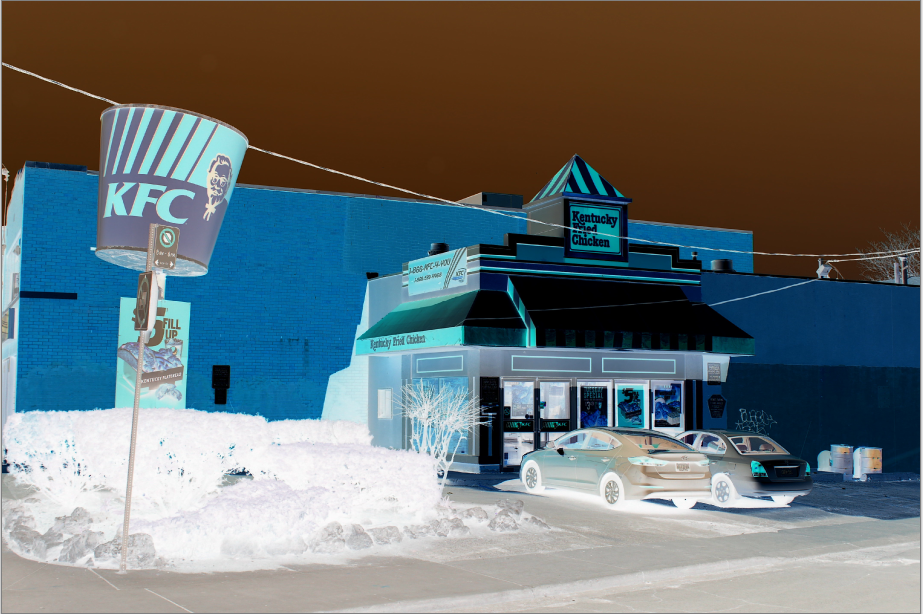

Filters Overview¶
Pinta offers a wide variety of filters that can be applied to your image and photograph, or to an isolated area using any one of the selection tools.
All of the filters can be found in the Adjustment menu:

We'll be using this photo of KFC to demonstrate the filters:

Pinta provides the following filters found in the Adjustments drop-down menu:
Sepia¶
Go to Adjustments > Sepia to apply the sepia filter.

The Sepia adjustment gives images an aged photograph look. It renders the image in black and white and adds a sepia tone. It doesn't have any configurable options.
Posterize¶
Go to Adjustments > Posterize to apply the posterize filter.

The Posterize adjustment reduces the number of color values that each pixel uses, giving the image a “posterized” effect. A dialog box with three sliders, one for red, one for green, and one for blue will appear.

Each RGB (Red, Green, Blue) color channel has 256 possible values so the sliders let you adjust the range from 2 to 64. The lower the number, the less color value each pixel uses.
- If the ☐ Linked checkbox is unchecked, you can adjust each color channel independently.
- If the ☑ Linked checkbox is checked, all color channels will follow the same value.
Black and White¶
Go to Adjustments > Black and White to apply the black and white filter.

The Black and White adjustment strips the image of all color information, desaturating it, and renders it in greyscale. The image will be made up of only black, white, and greyscale. It doesn't have any configurable options.
Invert Colors¶
Go to Adjustments > Invert Colors to apply the invert colors filter.

The Invert Colors adjustment is the digital equivalent of a negative. The tones are inverted so that black becomes white and vice versa. If applied a second time, the image reverts to its original colors. It doesn't have any configurable options.